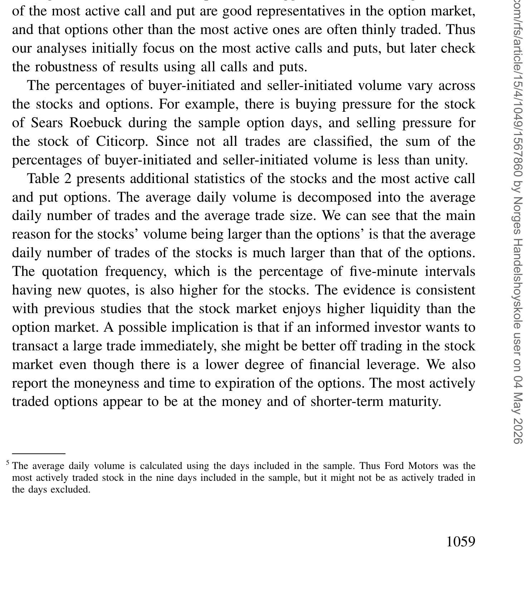
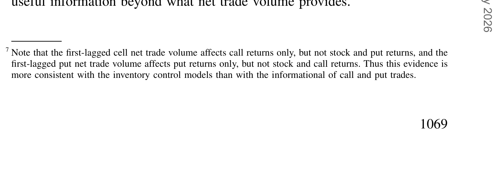
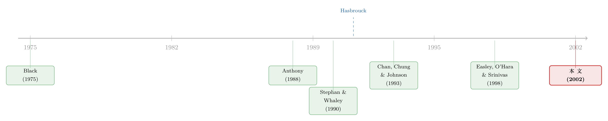

谁在期权市场里「下注」，谁只是「挂单」
本文读的是 Chan, Chung & Fong (2002, Review of Financial Studies)：把 NYSE 股票和它在 CBOE 上的期权放进同一个向量自回归 (vector autoregression, VAR) 框架后，作者发现——股票的净成交量 (net trade volume) 对股票和期权的报价变动都有很强的预测力，而期权的净成交量却没有任何额外的预测力。换句话说，知情投资者是在股票市场「主动出手」的；他们即便也在期权市场留下了痕迹，那痕迹也只藏在报价里，而不在成交单里。
1 一个被讲了二十年的悬案
先问一个看似无聊、其实要命的问题：如果你手里有一条还没被市场消化的好消息，你会去买股票，还是去买它的看涨期权？
直觉上答案很诱人。期权交易成本更低、自带杠杆，同样一笔钱能放大好几倍的赌注——这正是 Black (1975) 很早就提出的猜想：知情交易者应该偏爱期权市场。后来 Easley, O'Hara & Srinivas (1998，下文沿用作者们的简称 EOS) 把这件事推到了一个更有冲击力的结论上：他们发现期权的成交量对未来股价有预测力，于是断言——期权市场是知情交易者活动的真实场所，期权成交里含着关于未来股价的信息。
这听上去顺理成章。可问题是，几乎在同一片文献里，另一拨人得到了几乎相反的证据。Stephan & Whaley (1990) 用日内数据发现，是股票价格在领先期权价格，不是反过来；而 Chan, Chung & Johnson (1993) 又补了一刀，说这个「股票领先」很可能只是期权市场报价离散 (price discreteness) 造成的假象——一旦改用买卖报价的中点而非成交价，领先关系就消失了。再加上 Vijh (1990) 那篇经典：他盯着 CBOE 大额期权交易看，发现大单几乎不带动价格，于是他怀疑，所谓的「期权交易者的优越信息」也许只是「不同的意见」罢了。
于是文献吵成了一锅粥：知情者到底在哪个市场交易？哪个市场在真正地发现价格？没有定论。
这桩公案在博客里其实有不少「续集」。EOS 之后，期权量到底能不能预测股价、这种预测力又从何而来，一直被反复审讯——可参见《期权账本里的「先知」：谁在下注，比下注本身更重要》 与《期权里藏着的，不是先知，而是一张借券账单》。本文，是这条线上很靠前的一块基石。
2 真正关键的一步：把「成交」和「报价」分开称重
那么 Chan、Chung 和 Fong 做对了什么？
他们注意到，前人几乎都犯了同一个方法论上的「半盲」：要么只看价格变动（Manaster & Rendleman 1982、Bhattacharya 1987），要么只看成交量（Anthony 1988），即便 Stephan & Whaley (1990) 两样都看，也是把价格关系和成交量关系分开分析的。
可信息恰恰可能藏在它们的接缝处。设想一个知情者真的去了期权市场，他有两种下注方式：
- 提交市价单 (market order)：立刻成交，于是他「发起」了一笔交易——这时信息体现在成交的方向上（是买方主动还是卖方主动）；
- 提交限价单 (limit order)：被动挂单等别人来撞，于是他不发起交易，但他的挂单会改变市场的最优报价——这时信息体现在报价变动里，而不在成交单里。
这就是全文的题眼。如果你只看成交量，你会漏掉那些用限价单交易的知情者；而如果你同时看成交和报价，你才能把信息的两条暗道都堵上。 在 CBOE，公开限价单簿由 order book official 管理，按规则这些公开限价单优先于其他订单——只要做市商不去改进它们，它们就会成为市场最优报价。也就是说，知情者的限价单确实有能力推动报价。
于是本文把研究对象从「价格 vs. 成交量」升级为一张 2×2 的表：股票的{成交、报价}、期权的{成交、报价}，两两之间谁预测谁。
还有第二个不起眼却要命的改动。前人用的是总成交量 (total trading volume)；本文用的是净成交量 (net trade volume)——买方主动成交量减去卖方主动成交量。理由来自 Kyle (1985)、Admati & Pfleiderer (1988) 这一脉的非对称信息模型：做市商分不清某一笔买单是知情者还是流动性交易者下的，理性的定价策略就是「净买入为正就上调报价、为负就下调」。所以净成交量度量的是临时性的订单失衡 (order imbalance)，它才是真正驱动报价修正的那个变量。Glosten & Harris (1988)、Hasbrouck (1991)、Madhavan, Richardson & Roomans (1997)、Huang & Stoll (1997) 一连串微观结构实证都支持这一点。
「净成交量预测收益」这条逻辑，在股票市场里早被反复验证——订单失衡如何预言个股的下一步，可参见《一百万股，到底是买还是卖？——订单失衡里那条会反转的预测线》。本文的新意，是把这把尺子同时架到股票、看涨、看跌三个市场上。
3 方法：一套六个方程的「交叉问询」
本文的引擎，是 Hasbrouck (1991) 那个用来度量股票成交信息含量的二元 VAR 模型。先看单一市场（比如股票）的最简形式：
$$ r_t = a_1 r_{t-1} + \cdots + a_p r_{t-p} + b_0 z_t + b_1 z_{t-1} + \cdots + b_p z_{t-p} + \varepsilon_{1,t} $$
$$ z_t = c_1 r_{t-1} + \cdots + c_p r_{t-p} + d_1 z_{t-1} + \cdots + d_p z_{t-p} + \varepsilon_{2,t} $$
这里 \(r_t\) 是交易 \(t\) 之后的报价收益（买卖中点的变化），\(z_t\) 是交易 \(t\) 的带符号成交量（买方主动为正、卖方主动为负）。
这套式子和普通 VAR 几乎一样，但有一处刻意的不对称：当期的 \(z_t\) 出现在 \(r_t\) 的方程右边，而 \(r_t\) 不出现在 \(z_t\) 的方程右边。 这背后是一个因果假设——成交（无论当期还是滞后）可以即刻推动报价，但报价只能通过滞后项反过来影响成交。Hasbrouck (1991) 对这个设定相较其他替代方案的优越性有过精彩的论证。
接下来是本文真正的扩展。把标量换成向量，定义
$$ r_t = (r^s_t,\, r^c_t,\, r^p_t)', \qquad z_t = (z^s_t,\, z^c_t,\, z^p_t)' $$
其中上标 \(s,c,p\) 分别表示股票 (stock)、看涨期权 (call)、看跌期权 (put)。于是模型变成：
$$ r_t = a_1 r_{t-1} + \cdots + a_p r_{t-p} + b_0 z_t + b_1 z_{t-1} + \cdots + b_p z_{t-p} + \varepsilon_{1,t} $$
$$ z_t = c_1 r_{t-1} + \cdots + c_p r_{t-p} + d_1 z_{t-1} + \cdots + d_p z_{t-p} + \varepsilon_{2,t} $$
只不过现在 \(a_1,\dots,b_0,\dots,c_1,\dots,d_1,\dots\) 都是 \((3\times 3)\) 的系数矩阵，\(\varepsilon_{1,t}\)、\(\varepsilon_{2,t}\) 是 \((3\times 1)\) 的扰动向量。Hasbrouck 的两个方程，在这里膨胀成了六个回归方程的系统。
为什么要这么折腾？因为只有在这个系统里，你才能问出那个最锋利的问题：在控制住股票市场和看跌市场的成交、以及三个市场所有的滞后报价之后，看涨期权的成交量是否「还」含有信息、是否「还」能领先股票与期权的报价修正？ 这就是「增量预测力 (incremental predictive ability)」——一个变量在别人都已经在场之后，是否还有话要说。
最核心的，是 \(r_t\) 那一行里关于当期成交的那一项。把它拎出来标注一下：
这里的关键全在 \(b_0\) 这个矩阵的非对角元上。若期权净成交量对股票报价的那一格系数显著，就说明期权成交里含着会溢出到股票市场的信息（EOS 的「混同均衡」）；若不显著，则说明知情者并不在期权市场主动出手（「分离均衡」）。
这个 VAR 是计量模型，不是结构性的经济模型——它不内生地推导出均衡，而是用一套带因果方向假设的回归，去把信息含量「读」出来。所以下文的结论，强度取决于这套因果方向假设是否站得住（详见第 7 节的担忧）。
作者也提醒，模型和 Hasbrouck 原版有两点差别：其一，本文用日历时钟 (calendar clock) 而非 Hasbrouck 的交易时钟 (transaction clock)——因为要把三个市场对齐，只能按日历时间切片；其二，\(z_t\) 因此被定义为某个日历时间区间内所有带符号成交量的净额，而非单笔交易的带符号量。
4 数据：从 60 只股票，到只剩 14 只
数据来自两个库：CBOE 期权来自 Berkeley Options Database，NYSE 的股票成交与报价来自 TAQ 数据库。样本是 1995 年第一季度，共 58 个交易日。
筛选过程本身就很说明问题。作者从 NYSE 上成交最活跃的 60 只股票起步（且样本期内未拆股，因为拆股会扰乱交易活动）；为避免外部交易所的污染，他们依 Hasbrouck (1995)「价格发现主要发生在 NYSE」的结论，剔除了所有非 NYSE 来源的股票成交与报价。每天为每只股票挑出最活跃的看涨与看跌合约，剩五天以内到期的就换下一个最活跃合约以躲开到期效应。
但真正的「血洗」发生在这一步：由于要在很短的时间区间上度量成交量，他们删掉了所有股票、看涨或看跌任一方当日成交少于 20 笔的「稀薄交易」期权日。 一刀下去，60 只股票最后只剩 14 只活跃股票，共 231 个期权日。绝大多数期权日（连同对应的股票）就是因为期权那一侧交易太稀而被删掉了——这个细节，后面会变成一个重要的反思。
成交方向的判定，本文像 EOS 一样用两套方法，主方法是 Lee & Ready (1991)：拿成交价和成交前的买卖报价比，并丢掉成交前五秒内的报价。
下表是最终样本里那 14 只股票及其期权的概况。

Table 1: presents our final sample of the CBOE options and their NYSE-
5 反转：发起者只有一个，但说话的有两个
把六个方程估出来，结论清晰得有些出人意料。可以归成两句话。
第一句，关于「成交」：发起交易的，只有股票市场。
股票净成交量对当期及随后的股票报价与期权报价都有很强的预测力——这毫不意外，正是「股票是知情交易场所」该有的样子。但真正的反转在于：期权净成交量没有任何增量预测力。 一旦把股票成交放进同一个系统，看涨与看跌期权的净成交量，对股价的预测力就被「吸干」了。这恰恰落在 EOS 所说的分离均衡 (separating equilibrium)：知情者只在股票市场主动出手，期权成交里那点看似的信息，其实是从股票成交「外溢」过去的影子。
这是对 EOS 的直接挑战。EOS 只看了期权成交本身，没把股票成交也放进来；而当代文献早有共识——日内股票成交量领先期权成交量的程度，远大于它滞后的程度（Stephan & Whaley 1990）。所以 EOS 从期权成交里读出的「信息」，很可能本就发源于股票成交。本文用一个把两者同时放进去的系统，把这层幻象戳破了。
第二句，关于「报价」：说话的，有两个市场。
可故事没有就此收场。作者发现，股票报价变动与期权报价变动，彼此都对对方的后续报价变动有预测力。 也就是说，股与期权的报价之间，是双向领先-滞后，而非单向。
把两句话合起来，就是全文那个既漂亮又「有点令人费解」的核心结论：
股票市场的信息，同时藏在它的成交和报价里；而期权市场的信息，只藏在报价里、不在成交里。
下表把这层跨市场关系摆了出来：股票与期权的报价彼此领先，而期权成交一旦被股票成交「控制」，便不再额外说话。

Table 6: reveals several cross-market relationships between the stock and
那么，期权报价里那点「不来自成交」的信息，是谁放进去的？作者给出一个克制的猜想：即便知情者也在期权市场交易，他们也不主动发起（不下市价单），而是被动挂限价单，指望某个不知情的流动性交易者来跟他们成交。问题来了——期权自带杠杆，按理说知情者更该急着用市价单抢在信息泄露前成交，他们为什么偏要「等」？
本文的答案是期权市场的低流动性。期权的相对买卖价差很大（Vijh 1990），用市价单要付的那笔价差，常常吃掉私有信息的价值；只有当「即时成交」的好处足够大时，知情者才肯在期权市场主动出手。这也和 Cao, Chen & Griffin (1999) 的发现对得上：期权成交只在公司特定事件前后才显出信息含量——那正是私有信息价值特别大的时候。
期权报价（而非成交）才是价格发现的载体，这一判断后来被反复检验。关于期权市场到底有没有、有多少价格发现，可参见《期权报价里，到底有没有「先知」？》。
6 文献脉络
把这条线捋直，故事其实很「微观结构」。
最早的两端是理论的诱惑与实证的混乱。Black (1975) 抛出「知情者偏爱期权」的猜想，给后来所有人埋下了悬念。实证这头则各执一词：Anthony (1988) 只看两个市场的日成交量关系；Stephan & Whaley (1990) 发现股票价格领先期权价格；Vijh (1990) 发现期权大单几乎不动价、怀疑期权交易不含信息；Chan, Chung & Johnson (1993) 则指出「股票领先」可能只是期权报价离散造成的假象。

方法的拐点来自 Hasbrouck (1991)：他用一个二元 VAR，把「成交」和「报价」一起放进来度量股票成交的信息含量——这给了后人一把能同时称量两样东西的尺子。理论的集大成则是 EOS (1998)：他们用分离/混同均衡刻画知情者的市场选择，并实证宣称期权成交含信息、能预测股价。
本文 (2002) 恰好站在 Hasbrouck 的方法与 EOS 的理论之间：它借 Hasbrouck 的 VAR，扩成股票/看涨/看跌的六方程系统，去检验 EOS 的均衡判断——最终把 EOS 的结论按回了「分离均衡」一侧，并补上一个 EOS 没看见的层次：信息可以只走报价、不走成交。
7 评论与延伸（Q&A + 研究方向）
(a) 几个可能的疑问
Q：本文和 EOS (1998) 到底分歧在哪？是数据不同还是方法不同？
主要是方法。EOS 只研究期权成交的信息含量，没把股票成交放进同一个模型；本文把股票、看涨、看跌的成交与报价一起塞进六方程 VAR。一旦控制住股票净成交量，期权净成交量的增量预测力就消失了。结论上，本文支持 EOS 理论框架里的「分离均衡」，但否定了 EOS「期权成交含信息」的实证主张。
Q：用净成交量而不是总成交量，差别真有那么大吗？
很大。总成交量是「热闹程度」，不分方向；净成交量是「方向性的订单失衡」，按 Kyle (1985)、Glosten & Harris (1988) 这一脉，它才是驱动做市商修正报价的那个变量。用总量，你看到的是相关；用净量，你才逼近因果方向上的信息传导。
Q：「期权报价含信息、期权成交不含」——这难道不矛盾吗？
不矛盾，这正是全文最精巧的地方。知情者若用限价单交易，他不发起成交（所以成交里看不出方向信息），但他的挂单会改变 CBOE 的最优报价（公开限价单优先于做市商报价），于是信息进了报价。一句话：成交看的是「谁主动撞上来」，报价看的是「谁在边上挂着」。
Q：那为什么有杠杆的好处，知情者还偏要被动挂单、不抢着成交？
本文的解释是期权市场流动性低、相对价差大（Vijh 1990），市价单要付的价差常常吃掉私有信息的价值。只有信息价值足够大（如公司特定事件前后，Cao, Chen & Griffin 1999）时，知情者才肯付这笔「即时成交费」去主动出手。
Q：只剩 14 只股票、231 个期权日，这个样本撑得起这么强的结论吗？
这是最该担心的地方。删掉「稀薄交易」期权日本是为了让短区间成交量度量更干净，但它同时把样本筛成了「期权交易最活跃」的那一批。结论因此只对最活跃的股票期权成立；对那些平时没什么人交易、却可能在消息来临时突然放量的期权，本文说不了话——而那恰恰是知情交易最可能发生的角落。
Q：这套结论对今天还成立吗？
要小心。样本是 1995 年第一季度，那时还是分数报价、人工 CBOE、没有如今的电子化与高频做市。期权市场的流动性和价差结构已天翻地覆，「期权流动性低 → 知情者不敢主动成交」这条机制的强度很可能已经改变。本文是一块时代基石，不是一个跨时代的常数。
(b) 几个可能的研究问题与提案
1. 把这套六方程 VAR 搬到公司债与其 CDS / 债券期权上。 - 【经济故事】公司债市场和期权市场一样：流动性低、相对价差大、且存在一个「衍生」的信用衍生品市场（CDS）。本文的核心机制——「低流动性把知情者从成交端逼到报价端」——在公司债里应该更强烈。知情者到底在现券、在 CDS、还是在债券报价里说话？ - 【可行性】中。数据可得（TRACE 逐笔成交 + Markit CDS 报价），难点在于公司债报价不像股票那样连续，净成交量与报价修正的对齐需要谨慎处理稀薄交易——这恰恰是本文样本被砍到只剩 14 只的同一个病。
2. 用本文框架检验「外资持有人」是否在哪个市场主动出手。 - 【经济故事】外资常被认为信息劣势，但也有研究显示他们在某些市场更知情。把交易按投资者类型（本地/外资）拆开，用净成交量看谁在股票端主动发起、谁只在报价端被动挂单，能给「外资到底知不知情」的争论一把微观结构的尺子。 - 【可行性】中到低。需要带交易者身份标签的逐笔数据（如韩国交易所那类账本），这类数据稀缺且通常不含期权侧；可行性取决于能否拿到配套的期权交易标签。
3. 把「成交 vs. 报价」的信息分解，做成一个事件研究。 - 【经济故事】本文猜测期权成交只在公司特定事件前后含信息。可以围绕盈余公告、并购公告等事件窗口，逐日重估六方程 VAR 的非对角系数，看「知情者从报价端切换到成交端」是否真的发生在信息价值最大的那几天。 - 【可行性】高。事件可清晰界定，方法是本文 VAR 的滚动估计，数据要求与本文一致。这是对本文那个「克制猜想」最直接的检验。
我的判断
本文的贡献，不在于又跑了一个 VAR，而在于它重新定义了该问的问题：从前人「价格 vs. 成交量」的二选一，升级为「股票{成交、报价}× 期权{成交、报价}」的完整 2×2，并用净成交量替换总成交量，把「信息」从「热闹」里剥出来。正是这个更细的切法，让它能讲出一句前人讲不出的话——信息可以只走报价、不走成交。这是对 EOS 的一次漂亮的、方法论层面的纠偏。
但我对识别有两点真实的担忧。其一是那个写进模型骨架的因果方向假设：成交即刻影响报价、报价只滞后影响成交。这个假设让 VAR 能解读成「信息含量」，可它本身是先验强加的；如果现实里报价与成交是被同一束信息同时驱动的，那么「谁预测谁」的解读就会松动。其二是样本的内生筛选：把稀薄交易的期权日删光，等于只保留了期权最活跃的样本，而知情交易最有可能藏身的，恰恰是平时清淡、消息来时骤然放量的那些合约——本文按定义看不到它们。
后续我最想看到的，是把这套框架放到今天电子化、高频化的期权市场里重做一遍：当期权流动性大幅改善、相对价差被压窄，本文那条「低流动性逼退知情成交」的机制还剩多少？如果机制反转，知情者开始在期权端主动出手，那将不只是更新一个系数，而是说明市场结构本身改写了价格发现的地理。
参考文献
- Admati, A., and P. Pfleiderer (1988). A Theory of Intraday Patterns: Volume and Price Variability. Review of Financial Studies 1, 3–40.
- Anthony, J. (1988). The Interrelation of Stock and Options Market Trading-Volume Data. Journal of Finance 43, 949–964.
- Black, F. (1975). Fact and Fantasy in the Use of Options. Financial Analysts Journal 31, 36–41.
- Cao, C., Z. Chen, and J. Griffin (1999). Informed Trading in the Options Market. Working paper, Pennsylvania State University.
- Chan, K., P. Chung, and H. Johnson (1993). Why Option Prices Lag Stock Prices: A Trading-Based Explanation. Journal of Finance 48, 1957–1967.
- Chan, K., Y. P. Chung, and W.-M. Fong (2002). The Informational Role of Stock and Option Volume. Review of Financial Studies 15(4), 1049–1075.
- Easley, D., M. O'Hara, and P. Srinivas (1998). Option Volume and Stock Prices: Evidence on Where Informed Traders Trade. Journal of Finance 53, 431–465.
- Glosten, L., and L. Harris (1988). Estimating the Components of the Bid/Ask Spread. Journal of Financial Economics 21, 123–142.
- Hasbrouck, J. (1991). Measuring the Information Content of Stock Trades. Journal of Finance 46, 179–207.
- Hasbrouck, J. (1995). One Security, Many Markets: Determining the Contributions to Price Discovery. Journal of Finance 50, 1175–1199.
- Kyle, A. (1985). Continuous Auctions and Insider Trading. Econometrica 53, 1315–1335.
- Lee, C., and M. Ready (1991). Inferring Trade Direction from Intradaily Data. Journal of Finance 46, 733–746.
- Manaster, S., and R. Rendleman (1982). Option Prices as Predictors of Equilibrium Stock Prices. Journal of Finance 37, 1043–1057.
- Stephan, J., and R. Whaley (1990). Intraday Price Change and Trading Volume Relations in the Stock and Stock Option Markets. Journal of Finance 45, 191–220.
- Vijh, A. (1990). Liquidity of the CBOE Equity Options. Journal of Finance 45, 1157–1179.